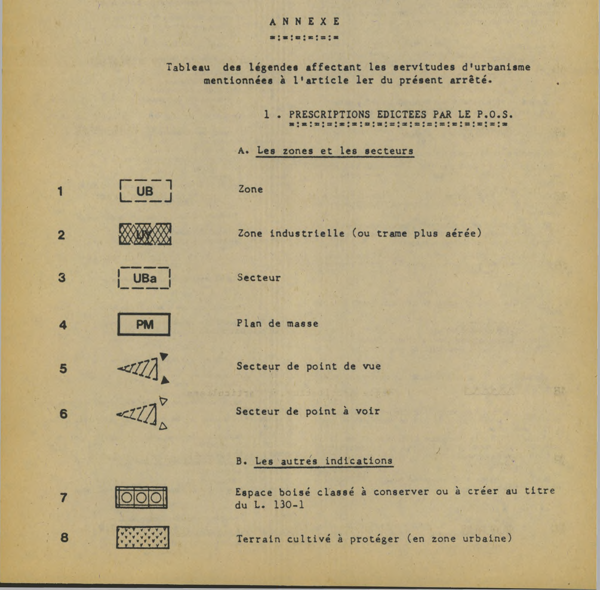
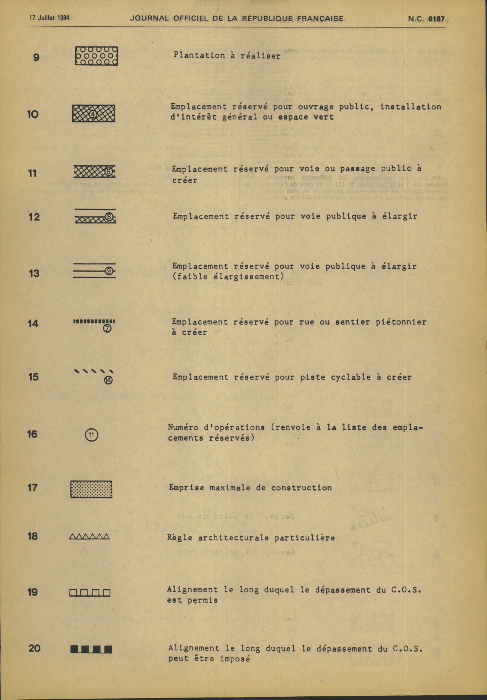
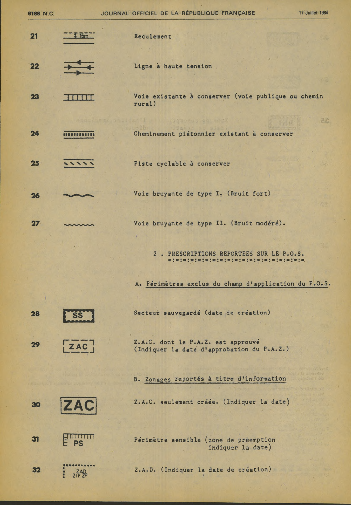
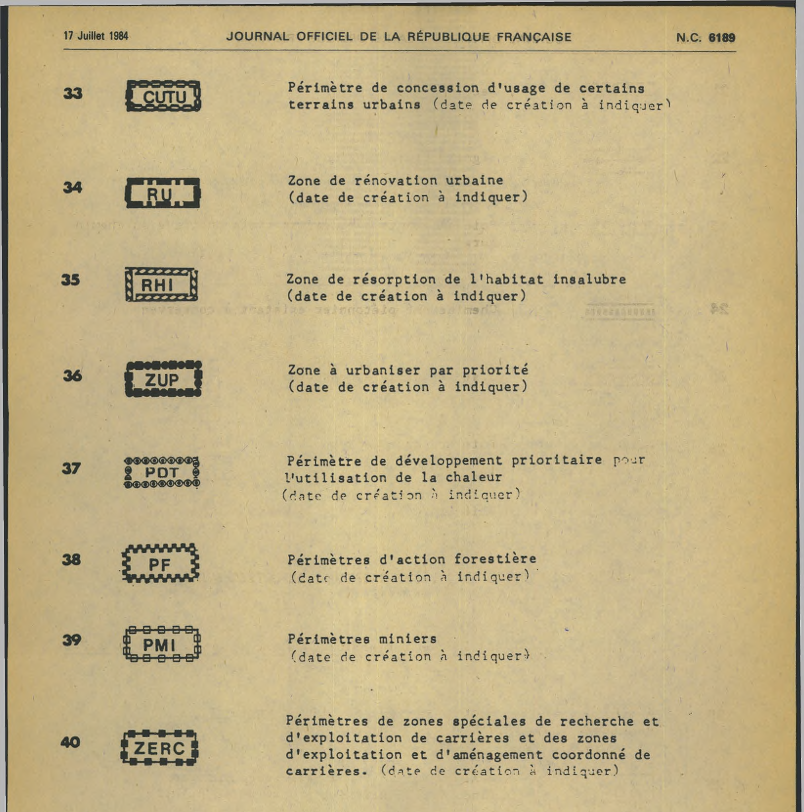

Extrait local fidèle de l’annexe seule, arrêté du11mai1984, JORF numéro complémentaire du17juillet1984, p.6186-6189. Recadrages des pages6186 et6189, sans retouche des pixels. La légende SUP voisine est exclue.
La représentation des différentes servitudes mentionnées aux I et II de l'article R. 123-18 et pouvant figurer sur les documents graphiques du plan d'occupation des sols est fixée conformément à la légende annexée au présent article (non reproduite, voir JONC du 17 juillet 1984).
Extrait, partie1/4 : page originale6186, entrées1 à8.

Extrait, partie2/4 : page originale6187, entrées9 à20.

Extrait, partie3/4 : page originale6188, entrées21 à32.

Extrait, partie4/4 : page originale6189, entrées33 à40.
